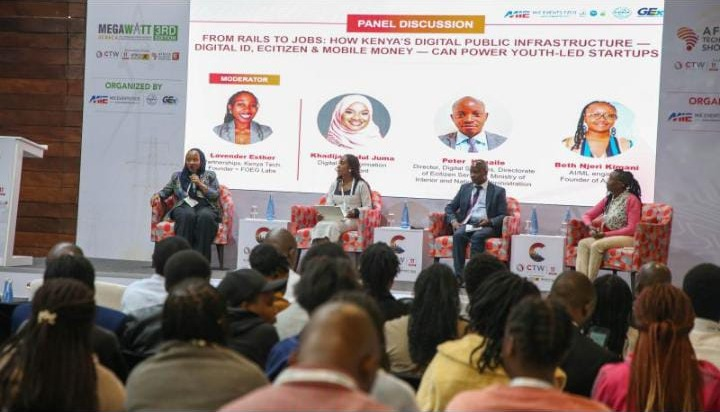
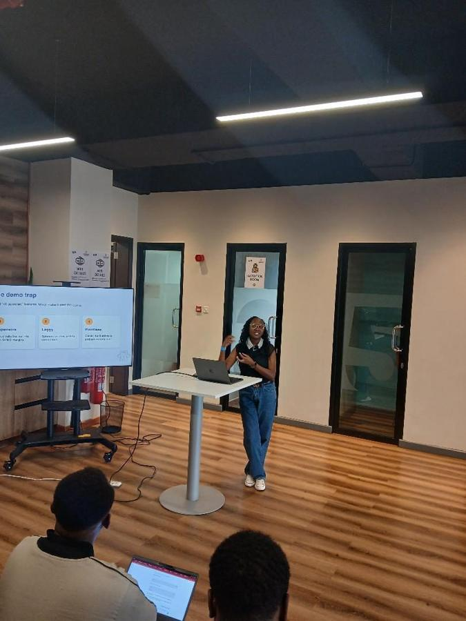
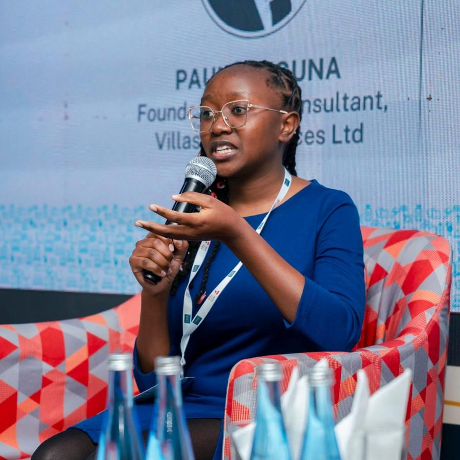

const njeri = { does: "backend + AI", from: "Nairobi" };
Backend and AI,
built for African SMEs.
I’m a self-taught engineer and the founder of Axene.io. I build the dependable parts, the APIs, pipelines and infrastructure, that small businesses can actually afford.
about
Self-taught, shipping in production.
I’m a Google Cloud Certified ML Engineer and backend developer, and I learned by building. At Axene.io I’m giving African SMEs local-first, M-Pesa-compatible alternatives to USD-priced SaaS. Email, meetings and a CRM are live today. Chat, payments, domains, analytics and ERP tools are next on the roadmap.
I also mentor data professionals and lead AI/ML programming for GDG Chuka and She Code Africa.
- languages
- Python, SQL, TypeScript
- ml and ai
- PyTorch, TensorFlow, Scikit-learn, XGBoost, River, LangChain
- backend
- FastAPI, Django, Node/Express, React
- infra
- GCP (Vertex AI, Cloud Run), AWS, Docker, CI/CD, SMTP, DNS
- data
- PostgreSQL, BigQuery, Pandas
Google Cloud Professional ML Engineer · AWS AI Practitioner, Udacity · Google Advanced Data Analytics · Google IT Automation with Python · AI/ML Expert, Everything Data Africa
selected work
experiments
Smaller ML projects, run on synthetic or sample data to test an idea.
RiverA streaming pipeline that imputes, scales and encodes, then learns a logistic regression one row at a time.Python · River Impute & ValidateKNN against a mean/mode baseline on a Kenyan transactions dataset.MAE about 653 vs 775Scikit-learn Networks & AgentsA PyTorch credit-risk net, a feature-importance check and a rule-based water-pump ticket script.PyTorch · Oct 2026experience
Founder & AI/Python Lead
- Architected and shipped Axene Mail on FastAPI, PostgreSQL, Docker and GCP, replacing USD-priced services for Kenyan SMEs, now with 120 customers.
- Built AI features inside Axene Meet (bookings) and the CRM. Chat, payments, domains, analytics and ERP modules are planned, not yet shipped.
Data Science Mentor
- Mentored aspiring data scientists through hands-on cohorts covering Python, statistics and applied ML.
- Guided mentees from raw datasets to deployed models, and introduced standardised visualisation frameworks.
Lead Data Analyst
- Led data pipelines in Pandas and BigQuery for cohort analysis, and built Scikit-learn models to predict student placement.
AI/ML Community Lead (volunteer)
- Delivered AI/ML workshops and hackathons, ran GCP workshops on Vertex AI and Cloud Functions, and organised Buildathons that produced working cloud-native AI prototypes.
talks



- Women in Tech Summit Kenya: from prototype to production (upcoming)
- RenderCon Kenya: building AI features real SMEs will actually use
- THX: The Hotel Expo, KICC, Nairobi
- Africa Technology Show: panel on digital public infrastructure and youth-led startups
- GDG Chuka, She Code Africa Chuka and PinkHub sessions. AWS Student Builder Group at Zetech: Intro to SQL with Amazon Athena. Winner, GoMyCode Kenya Hackathon (KES 300,000 scholarship).
contact
Hiring, or got a problem an SME would pay to solve?
I’m open to work right now: backend, AI and ML roles are what I’m after, and I’ll keep building Axene alongside.
njeri@axene.io